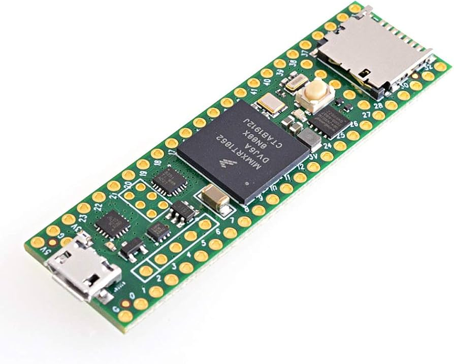
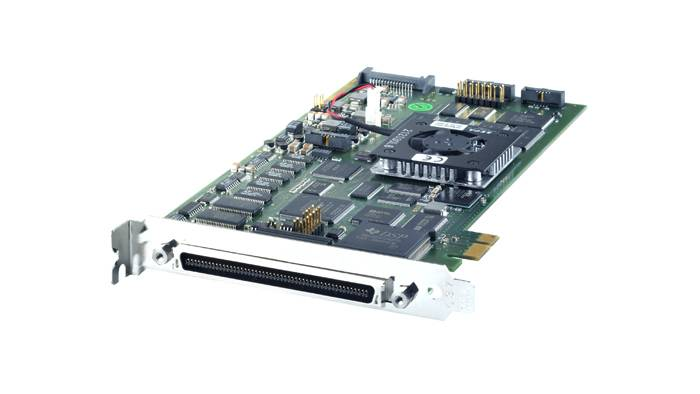

Title Slide

Advanced Topics
Active Research Fields
Dr Guilherme Froes Silva
School of Electrical Engineering & Robotics
Queensland University of Technology
EGH445 - Modern Control
Consultation: GP-S1111
Email: g.froessilva@qut.edu.au
Overview
- Announcements (marking, demonstration, etc.)
- Recap: state-feedback and estimation
- Implementation: hardware and software
- Energy-based control
- Multi-agent systems
State-Feedback and Estimation
- State-feedback control
- Pole placement
- Linear quadratic regulator (LQR)
- Integral action
- State estimation
- Luenberger observer
- Kalman filter
Recap: State-Feedback and Estimation
Modelling discrete-time state-space systems:
x(kT+T) = Gx(kT) + Hu(kT) y(kT) = Cx(kT) + Du(kT)
State-Feedback Control, designing u(kT) = -Kx(kT) for:
- Arbitrary pole placement.
- Optimal performance via LQR.
- Integral action.
State Estimation (Observers), when x(kT) isn’t fully measurable:
\hat{x}(kT+T) = (G - L_dC)\hat{x}(kT) + Hu(kT) + L_dy(kT)
Output Feedback, combining control and estimation (Separation Principle)
u(kT) = -K\hat{x}(kT)
Controller Implementation
How discrete-time control laws u(kT) = -Kx(kT) run on a physical system?
- Common hardware platforms
- Development boards
- Microcontrollers
- Industrial controllers
- Software considerations
- Discrete control loop
- Interrupts
- Latency
The Digital Control Loop
- Sample sensor data (e.g., position) at time kT. Requires Analog-to-Digital Conversion (ADC)1.
- Compute the control input u(kT) using the discretised control law and the sampled (or estimated) states.
- Apply the control input to actuators (e.g., motors). Requires Digital-to-Analog Conversion (DAC).
Important
This entire Sample-Compute-Actuate cycle must execute reliably within each sampling period T!
Important
Implementation involves choices about:
- Hardware Platform.
- Software Environment.
- Interfacing sensors and actuators.
Hardware: Development Boards
- Common development boards
- Arduino, Teensy, etc.
- dSpace DS1104, MicroLabBox, etc.


Hardware: Microcontrollers
- Common microcontrollers
- 8-bit: Pic, ATmega (arduino), etc.
- 16-bit: MSP430, PIC24, etc.
- 32-bit: ARM Cortex-M, STM32, etc.
Note
Microcontrollers are often the first choice of hardware in embedded systems due to their low cost and inclusion of peripherals (ADC, DAC, timers, PWM generators, etc.).
Hardware: Industrial Controllers
Programmable Logic Controllers (PLCs)
Built for industrial environments: Rugged, reliable, and modular.
- Siemens S7 series
- Rockwell Automation ControlLogix
- Schneider Electric Modicon
Programmed using IEC 61131-3 standards
- Ladder Logic (LD), Function Block Diagram (FBD), Structured Text (ST), Instruction List (IL), Sequential Function Chart (SFC).
Software: Discrete Control Loop
Control Law: u(kT) = -K\hat{x}(kT) (using estimate)
// --- Initialization (This is Pseudo-code) ---
// Controller & Observer Parameters (loaded from design)
Matrix G, H, C, D; // System model (D might be zero)
Matrix K_gain; // State-feedback gain
Matrix Ld_gain; // Observer gain
Vector x_hat_k; // Estimated state (current, initialized appropriately)
Scalar T_sampling; // Sampling period
initialize_ADC_DAC_timers();
configure_timer_interrupt(T_sampling, &control_loop_ISR);
enable_interrupts();
// x_hat_k = initial_estimate (e.g., zeros or best guess)
// --- Real-Time Loop (Interrupt Service Routine - ISR) ---
// This function is called by the hardware timer every T_sampling seconds
function control_loop_ISR() {
// 1. SAMPLE SENSORS
Vector y_k = read_ADCs(); // Get current output y(kT)
// 2. COMPUTE (State Estimation - Luenberger Observer Example)
x_hat_k = (G - Ld_gain * C) * x_hat_k + H * u_k + Ld_gain * y_k; // Think about how to implement this in a small Arduino Uno.
// 3. COMPUTE (Control Law)
Vector u_k = -K_gain * x_hat_k; // Control input
// 4. ACTUATE
apply_DAC_or_PWM(u_k);
...Real-Time Challenges
- Computational Delay
- Time taken to compute control law
- Time taken to read sensors and actuate
- Time taken to execute the control loop
- Timing Jitter
- Variability in timing of control loop execution
- Can be caused by interrupts, other processes, etc.
- Resources
- Memory limitations
- Size of program (linear algebra libraries, etc.)
Energy-based Control
Design controllers by directly considering the physical energy of the system.
- Energy shaping
- Energy functions
- Passivity
- Dissipation
Energy functions
Remember Lyapunov stability?
- Lyapunov function \quad V(x) \geq 0,\quad x\neq 0,\quad V(0)=0
- If \;\boxed{\dot{V}(x) = \frac{dV}{dx}\textcolor{blue}{\frac{dx}{dt}} < 0}1, energy is being dissipated (stable system).
Research: Passivity Based Control
- Passivity: A system is passive if it can only dissipate energy.
- Damping Injection: A control strategy that adds damping to a system, making it passive.
- Example: Adding a damping term to the system dynamics.
Pendulum Swing-Up1
Swing-up (Energy Injection)
- Pendulum’s Energy: Define as proportional to the sum of its potential (mgl\cos(\theta)+1) and rotational kinetic energy (ml^2\dot\theta^2).
- Target Energy: The upright position has a specific (higher) total energy (E_\text{up} = \text{Potential Energy}_{up}).
- Control Logic: If current total energy E < E_\text{up}, apply control to “pump” energy into the pendulum.
- This is a nonlinear control strategy.
- Example approach: Apply torque/force in the direction of angular velocity when the pendulum is near the bottom (to add energy efficiently), or based on an energy error (E_\text{up} - E).
- The control u(kT) is designed to ensure \Delta E = E(kT+T) - E(kT) > 0 on average, until E(kT) \approx E_\text{up}.
Catch & Stabilise
- Condition: When the pendulum is near the upright position (angle \theta \approx 0, angular velocity \dot{\theta} \approx 0) AND its energy is close to E_\text{up}.
- Control Logic: Switch to a linear state-feedback controller (e.g., LQR or pole placement) designed for the linearised system around the upright equilibrium.
- This local controller “catches” the pendulum and stabilises it.
Multi-agent Systems
Distributed control
- Consensus algorithms
- Average consensus
- Leader-follower consensus
Network instability
If an individual system is stable, is the network stable?